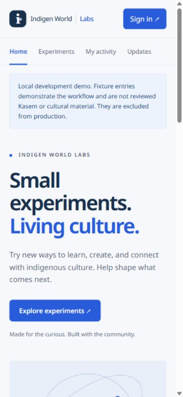
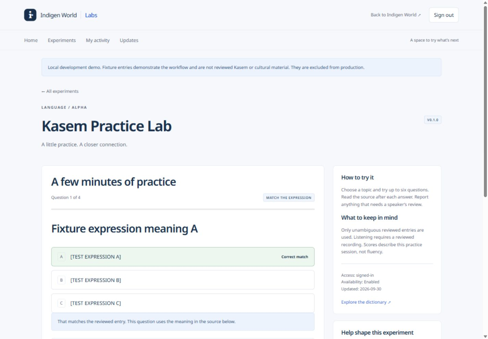
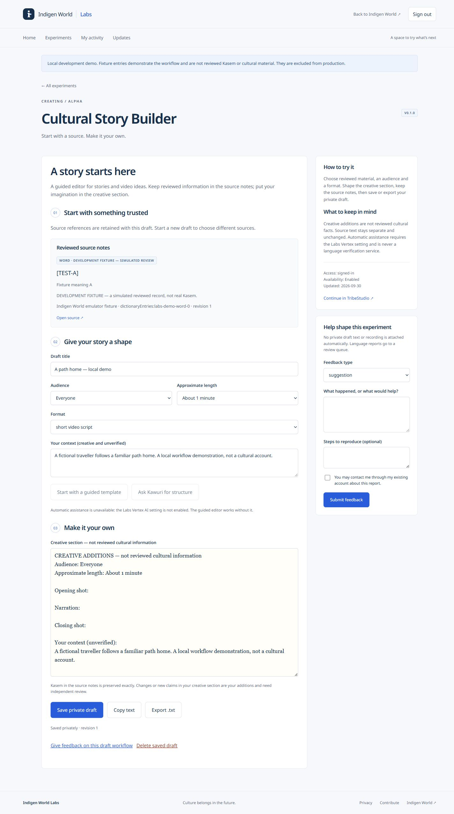

Now available: Indigen World Labs is live as a signed-in alpha. The screenshots below show the verified local development build; test forms and meanings are explicitly labelled and are not reviewed Kasem. Production uses eligible reviewed archive material, without these development fixtures.
Try new ways to learn, create, and connect with indigenous culture. Help shape what comes next.
That is the idea behind Indigen World Labs: a small experimental space within Indigen World, starting with two tools. It is for people who want a little language practice, creators looking for a story starting point, and contributors who can help us notice what needs to improve.

Choose a topic supported by reviewed material and try a short session. Questions ask you to choose a meaning or match a whole expression or sentence. Listening questions appear only when the recording has review and publication evidence. The source and meaning stay together, so an expression is not presented as an isolated word.
After an answer, you can read the source notes, open the relevant dictionary or contributor page, and report a language concern on that question. Reports go to a review queue; they do not change the dictionary automatically. Results describe that practice session, not a level of fluency.
If there is not enough suitable reviewed material for a fair question, the tool explains that. It does not invent translations, recordings or answers to fill the gap. Reviewed AI-generated pronunciation, where available, keeps its origin label and its review scope.

The Cultural Story Builder gives you a guided workspace for a short story, short video script or scene outline. Choose available reviewed material, decide who the story is for, choose an approximate length, and add your own context.
A structured template helps you begin. You can edit the creative section, save a private draft, reopen it later, and copy or export it as text. Source references travel with the draft and the export. Reviewed source notes and creative additions are clearly separate; new translations, historical claims or cultural practices are not certified by the editor.
Automatic Kawuri assistance is disabled in this release. The guided editor works without it. Optional assistance requires a separate configuration and verification step before it can be enabled. Any future assistant suggestion is labelled unverified and must be reviewed before applying it.

Each experiment includes a persistent feedback form for bugs, language issues, usability concerns, suggestions and positive feedback. You can include reproduction steps and decide whether the team may contact you about the report.
My activity shows your drafts, practice sessions and feedback. Reports can move through submitted, reviewing, planned, resolved and closed, with a response visible to the reporter. Private draft text and recordings are not automatically attached to reports or analytics.
Administrators can pause an experiment, restrict access to invited testers, retire it or mark it as graduated. Saved work remains retrievable, exportable and deletable when new work is paused. Experiment updates explain changes, and graduated tools link to their destination in the main ecosystem.
Availability: Both experiments are enabled as version 0.1.0 alpha tools with signed-in participation. September 30 production checks found 32 eligible sources and one practice topic in the bounded archive sample, and verified a six-question session, private drafts and feedback. Available topics can change as reviewed material changes. Listening requires publication-reviewed recordings; real audio playback has not been checked for this release. Automatic assistance remains disabled. This Blogger article is prepared for Chinedum to publish.